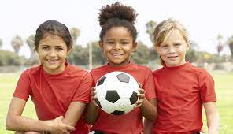
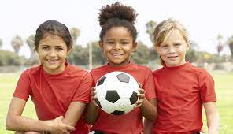

Events of the School
- AFRICAN DAY
The African Day event is a celebration of African culture and heritage. It typically includes various activities such as music and dance performances, art exhibitions, fashion shows, traditional food tasting, and educational workshops. The event aims to promote awareness and appreciation of African traditions, history, and contributions to society. During the event, you can expect to see vibrant displays of African music, dance, and fashion. There may be performances by local African artists, as well as opportunities for attendees to participate in traditional dances or try on African clothing. Art exhibitions may showcase African paintings, sculptures, and crafts, providing a glimpse into the rich artistic traditions of the continent.
 |
|
- SPORT FESTIVAL
Sports are physical activities that involve skill, strategy, and competition. They can be played individually or in teams and are enjoyed by people all around the world. Sports can be categorized into various types such as team sports (like soccer, basketball, and hockey), individual sports (like tennis, golf, and swimming), and combat sports (like boxing, martial arts, and wrestling). Participating in sports can have numerous benefits, including improving physical fitness, enhancing mental well-being, promoting teamwork and sportsmanship, and providing opportunities for personal growth and achievement
 

- GRADUATION
Graduation for basic school children is an important milestone in their educational journey. It typically marks the completion of a certain level of education, such as elementary or primary school. Graduation ceremonies are often held to celebrate the achievements of the students and to recognize their hard work and dedication. During these ceremonies, students may receive certificates or diplomas as a symbol of their accomplishment. Graduation is a time of reflection and celebration, as students prepare to move on to the next phase of their education. It is a time to acknowledge their growth, both academically and personally, and to look forward to new opportunities and challenges.


{kind=link}